── Conflicts ────────────────────────────────────────── tidyverse_conflicts() ──
✖ dplyr::filter() masks stats::filter()
✖ dplyr::lag() masks stats::lag()
ℹ Use the conflicted package (<http://conflicted.r-lib.org/>) to force all conflicts to become errors
Create a dataframe for each artist’s song collection using the spotifyr package’s “get_artist_audio_features”. This function produces dataframes with all of each artist’s songs and multiple features about each song. We will only be using the “artist_name”, “album_release_date”, “danceability”, “valence”, “energy”, “track_name”, “album_name” features so we will remove the rest of them at this point. Then, we can download these dataframes as .csv files.
First, find the average energy across all of the songs for each artist separately. Then create a new dataframe with all four of these energy averages. We will display this data using a bar graph.
Code
TSenergy_avg <-mean(TS$energy) #2274A5FMenergy_avg <-mean(FM$energy) #F75C03DCenergy_avg <-mean(DC$energy) #D90368PPenergy_avg <-mean(PP$energy) #F1C40Fenergy_sums =c(TSenergy_avg, FMenergy_avg, DCenergy_avg, PPenergy_avg)labels =c("Taylor Swift", "Fleetwood Mac", "Doja Cat", "Peso Pluma")energy_data =data.frame(Label = labels, Value = energy_sums)artist_colors <-c("Taylor Swift"="#2274A5", "Fleetwood Mac"="#F75C03", "Doja Cat"="#D90368", "Peso Pluma"="#F1C40F")ggplot(energy_data, aes(x =fct_rev(fct_reorder(Label, Value)), y = Value, fill = Label)) +geom_bar(stat ="identity", color ="black") +scale_x_discrete(name ="Artist") +scale_y_continuous(name ="Average energy of songs (%)", breaks =seq(0, 1, by =0.1)) +labs(title =expression("Comparison of the"~bold("Energy") ~"of Songs from Our Top Artists")) +scale_fill_manual(values = artist_colors) +theme(axis.title.y =element_text(margin =margin(r =15)), axis.title.x =element_text(margin =margin(t =12)) )
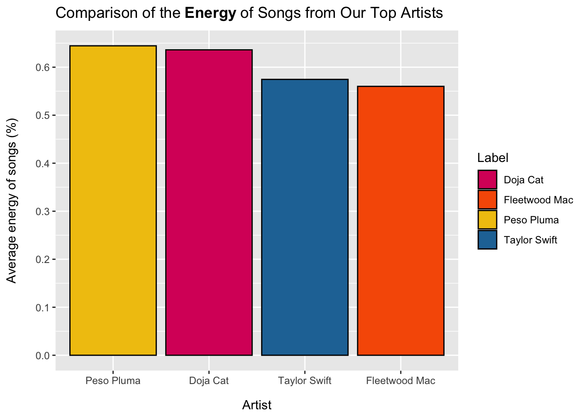
Ellise’s top two artists overall tend to have lower energy songs than Jaclyn’s top artists, although they are all pretty close on average.
Repeat this process for the valence and danceability:
Code
TSvalence_avg <-mean(TS$valence) FMvalence_avg <-mean(FM$valence) DCvalence_avg <-mean(DC$valence)PPvalence_avg <-mean(PP$valence)valence_sums =c(TSvalence_avg, FMvalence_avg, DCvalence_avg, PPvalence_avg)labels =c("Taylor Swift", "Fleetwood Mac", "Doja Cat", "Peso Pluma")valence_data =data.frame(Label = labels, Value = valence_sums)artist_colors <-c("Taylor Swift"="#2274A5", "Fleetwood Mac"="#F75C03", "Doja Cat"="#D90368", "Peso Pluma"="#F1C40F")ggplot(valence_data, aes(x =fct_rev(fct_reorder(Label, Value)), y = Value, fill = Label)) +geom_bar(stat ="identity", color ="black") +scale_x_discrete(name ="Artist") +scale_y_continuous(name ="Average valence of songs (%)", breaks =seq(0, 1, by =0.1))+labs(title =expression("Comparison of the"~bold("Valence") ~"of Songs from Our Top Artists")) +scale_fill_manual(values = artist_colors) +theme(axis.title.y =element_text(margin =margin(r =15)), axis.title.x =element_text(margin =margin(t =12)) )
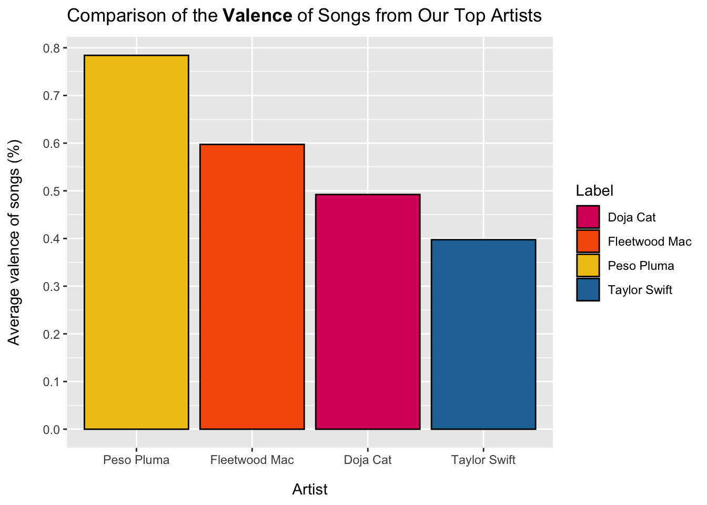
Since Peso Pluma and Doja Cat have the first and third highest valence scores, overall, it appears that Jaclyn likes music with a higher valence slightly more than Ellise does.
Code
TSdanceability_avg <-mean(TS$danceability) FMdanceability_avg <-mean(FM$danceability) DCdanceability_avg <-mean(DC$danceability) PPdanceability_avg <-mean(PP$danceability) danceability_sums =c(TSdanceability_avg, FMdanceability_avg, DCdanceability_avg, PPdanceability_avg)labels =c("Taylor Swift", "Fleetwood Mac", "Doja Cat", "Peso Pluma")danceability_data =data.frame(Label = labels, Value = danceability_sums)artist_colors <-c("Taylor Swift"="#2274A5", "Fleetwood Mac"="#F75C03", "Doja Cat"="#D90368", "Peso Pluma"="#F1C40F")ggplot(danceability_data, aes(x =fct_rev(fct_reorder(Label, Value)), y = Value, fill = Label)) +geom_bar(stat ="identity", color ="black") +scale_x_discrete(name ="Artist") +scale_y_continuous(name ="Average danceability of songs (%)", breaks =seq(0, 1, by =0.1)) +labs(title =expression("Comparison of the"~bold("Danceability") ~"of Songs from Our Top Artists")) +scale_fill_manual(values = artist_colors) +theme(axis.title.y =element_text(margin =margin(r =15)), axis.title.x =element_text(margin =margin(t =12)) )
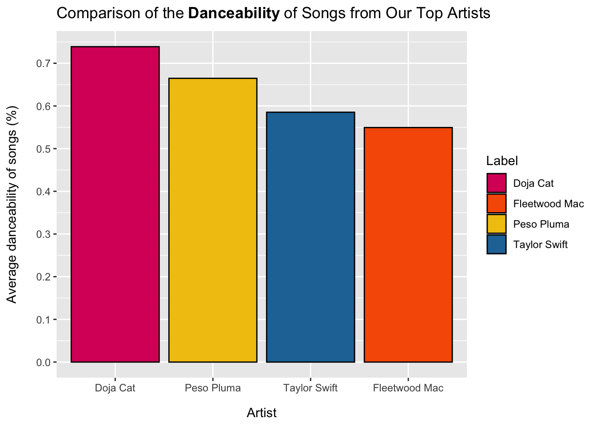
Since Doja Cat and Peso Pluma are Jaclyn’s top artists, this indicates that she prefers more danceable music than Ellise. However, this is a bit surprising considering Ellise is a dancer!
Now we will compare the moods of each artist based on the moods of each of their songs. This is based on James Russell’s circumplex model as referenced in “Feel the Moosic: Emotion-based Music Selection and Recommendation” by Patrick Helmholz, Michael Meyer, Susanne Robra-Bissantz. In this paper, they classify songs into one of four different mood categories (happy, angry, sad, or relaxed) based on their energy and valence scores. We will use this model to display the most frequent song moods for each of our top artists. This should help us compare the moods of our music preferences.
Code
# Mutate data: add an extra column "quadrant" to hold the mood of the song based on its energy/valenceTS <- TS %>%mutate(quadrant =case_when( valence >=0.5& energy >=0.5~"Happy", valence <0.5& energy >=0.5~"Angry", valence <0.5& energy <0.5~"Sad",TRUE~"Relaxed" ) )quadrant_colors <-c("Happy"="green3","Angry"="#FA0000CF","Sad"="#8D6A9F","Relaxed"="#63D2FF")ggplot(TS, aes(x = valence, y = energy, color = quadrant)) +geom_point(size =1) +xlim(0, 1) +ylim(0, 1) +geom_vline(xintercept =0.5, linetype ="dashed") +geom_hline(yintercept =0.5, linetype ="dashed") +labs(title =expression("Scatter Plot of the Mood of Every"~bold("Taylor Swift") ~"Song "), subtitle ="Calculated based on the energy/valence of each song",x ="Valence",y ="Energy",color ="Artist") +scale_color_manual(values = quadrant_colors) +theme(legend.position ="right")
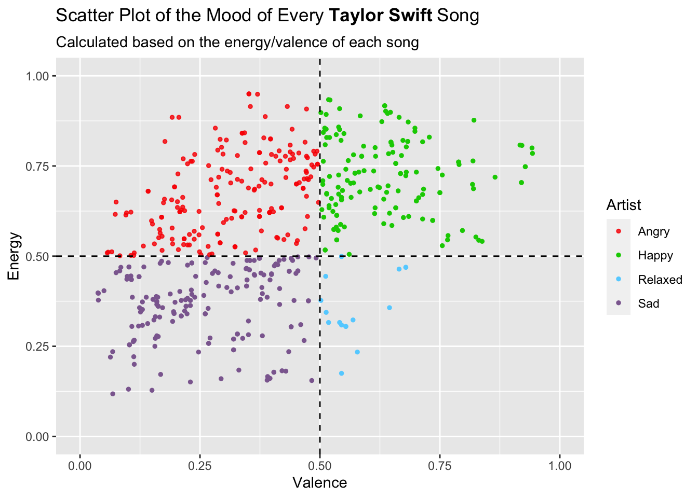
It appears that the majority of Taylor Swift’s songs are angry and happy. This makes sense as her songs are typically very passionate and have a strong message. However, I question how well these calculations can be trusted because using this method, her song “I Knew You Were Trouble.” was classified as relaxed when it should definitely be considered angry.
Code
FM <- FM %>%mutate(quadrant =case_when( valence >=0.5& energy >=0.5~"Happy", valence <0.5& energy >=0.5~"Angry", valence <0.5& energy <0.5~"Sad",TRUE~"Relaxed" ) )quadrant_colors <-c("Happy"="green3","Angry"="#FA0000CF","Sad"="#8D6A9F","Relaxed"="#63D2FF")ggplot(FM, aes(x = valence, y = energy, color = quadrant)) +geom_point(size =1) +xlim(0, 1) +ylim(0, 1) +geom_vline(xintercept =0.5, linetype ="dashed") +geom_hline(yintercept =0.5, linetype ="dashed") +labs(title =expression("Scatter Plot of the Mood of Every"~bold("Fleetwood Mac") ~"Song "), subtitle ="Calculated based on the energy/valence of each song",x ="Valence",y ="Energy",color ="Artist") +scale_color_manual(values = quadrant_colors) +theme(legend.position ="right")
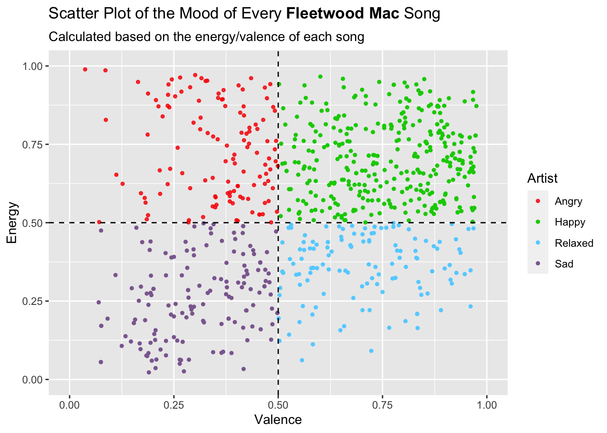
Fleetwood Mac appears to have a pretty even distribution of moods across their songs. This makes sense because they have the most songs out of all artists in our study and they have been making music over many decades. It appears that they have the most happy songs overall.
Code
DC <-DC %>%mutate(quadrant =case_when( valence >=0.5& energy >=0.5~"Happy", valence <0.5& energy >=0.5~"Angry", valence <0.5& energy <0.5~"Sad",TRUE~"Relaxed" ) )quadrant_colors <-c("Happy"="green3","Angry"="#FA0000CF","Sad"="#8D6A9F","Relaxed"="#63D2FF")ggplot(DC, aes(x = valence, y = energy, color = quadrant)) +geom_point(size =1) +xlim(0, 1) +ylim(0, 1) +geom_vline(xintercept =0.5, linetype ="dashed") +geom_hline(yintercept =0.5, linetype ="dashed") +labs(title =expression("Scatter Plot of the Mood of Every"~bold("Doja Cat") ~"Song "), subtitle ="Calculated based on the energy/valence of each song",x ="Valence",y ="Energy",color ="Artist") +scale_color_manual(values = quadrant_colors) +theme(legend.position ="right")
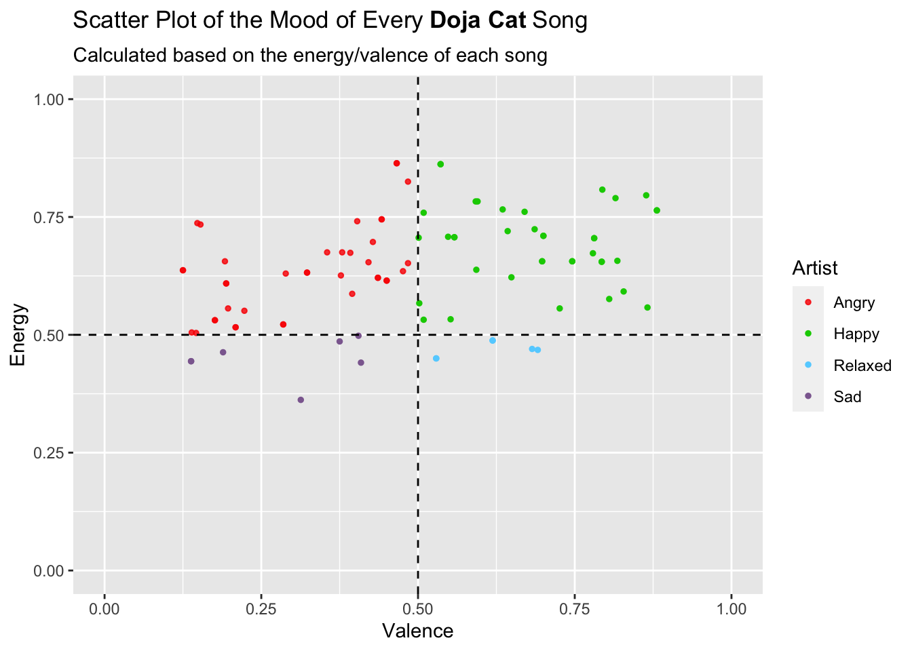
Immediately, looking at this plot I notice how many fewer songs Doja Cat has compared to Taylor Swift and Fleetwood Mac. Although the majority of them appear to be angry or happy, the difference in the sample sizes between artists makesit harder to compare them. This information was not visible to us in the bar graphs.
Code
PP <- PP %>%mutate(quadrant =case_when( valence >=0.5& energy >=0.5~"Happy", valence <0.5& energy >=0.5~"Angry", valence <0.5& energy <0.5~"Sad",TRUE~"Relaxed" ) )quadrant_colors <-c("Happy"="green3","Angry"="#FA0000CF","Sad"="#8D6A9F","Relaxed"="#63D2FF")ggplot(PP, aes(x = valence, y = energy, color = quadrant)) +geom_point(size =1) +xlim(0, 1) +ylim(0, 1) +geom_vline(xintercept =0.5, linetype ="dashed") +geom_hline(yintercept =0.5, linetype ="dashed") +labs(title =expression("Scatter Plot of the Mood of Every"~bold("Peso Pluma") ~"Song "), subtitle ="Calculated based on the energy/valence of each song",x ="Valence",y ="Energy",color ="Artist") +scale_color_manual(values = quadrant_colors) +theme(legend.position ="right")
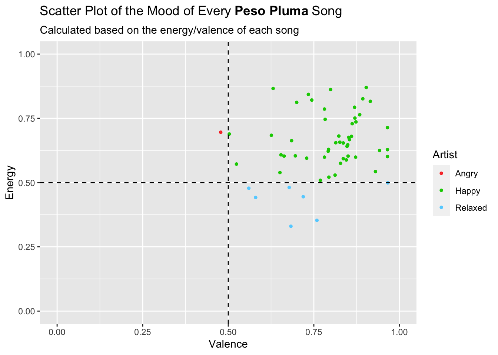
Again, like Doja Cat, Peso Pluma has very few songs. The large majority of them are considered happy.
Unfortunately, we don’t have access to our exact listening histories. However, we can try to predict our listening trends based on the release dates of songs from our top artists. This of course isn’t fully accurate because most of Fleetwood Mac’s songs were released before we were born.
Code
TS$album_release_date <-as.Date(TS$album_release_date)# Calculate average values for each release dateaverage_data <- TS %>%group_by(album_release_date) %>%summarise(avg_energy =mean(energy),avg_valence =mean(valence),avg_danceability =mean(danceability))ggplot(average_data, aes(x = album_release_date)) +geom_point(aes(y = avg_energy, color ="Energy")) +geom_point(aes(y = avg_valence, color ="Valence")) +geom_point(aes(y = avg_danceability, color ="Danceability")) +geom_line(aes(y = avg_energy, color ="Energy"), linewidth =0.6) +geom_line(aes(y = avg_valence, color ="Valence"), linewidth =0.6) +geom_line(aes(y = avg_danceability, color ="Danceability"), linewidth =0.6) +labs(title =expression("Average Energy, Valence, and Danceability Over Time of"~bold("Taylor Swift's") ~"Songs"),x ="Release date",y ="Average value per date",color ="Variable") +scale_x_date(date_breaks ="2 year", date_labels ="%Y") +scale_color_manual(values =c("Energy"="red", "Valence"="blue", "Danceability"="green")) +theme(title =element_text(size =9.5), axis.text.x =element_text(angle =45, hjust =1),axis.title.y =element_text(margin =margin(r =15)), axis.title.x =element_text(margin =margin(t =10)), )
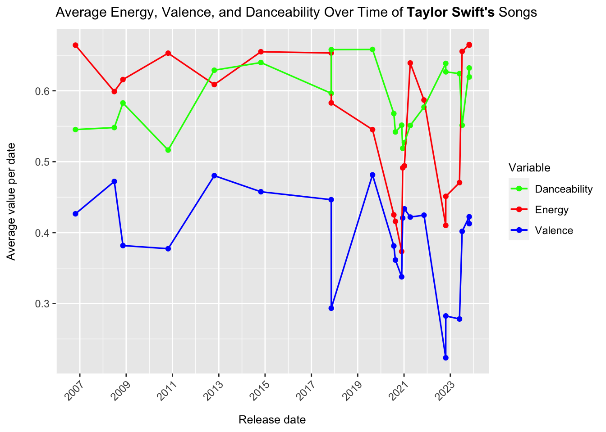
Code
FM$album_release_date <-as.Date(FM$album_release_date)# Some NAs are introduced when as.Date is called. This is because only the year of their release is listed. We will omit them because we cannot work with them and we have plenty of data. FM <-na.omit(FM)# Calculate average values for each release dateaverage_data <- FM %>%group_by(album_release_date) %>%summarise(avg_energy =mean(energy),avg_valence =mean(valence),avg_danceability =mean(danceability))ggplot(average_data, aes(x = album_release_date)) +geom_point(aes(y = avg_energy, color ="Energy")) +geom_point(aes(y = avg_valence, color ="Valence")) +geom_point(aes(y = avg_danceability, color ="Danceability")) +geom_line(aes(y = avg_energy, color ="Energy"), linewidth =0.6) +geom_line(aes(y = avg_valence, color ="Valence"), linewidth =0.6) +geom_line(aes(y = avg_danceability, color ="Danceability"), linewidth =0.6) +labs(title =expression("Average Energy, Valence, and Danceability Over Time of"~bold("Fleetwood Mac's") ~"Songs"),x ="Release date",y ="Average value per date",color ="Variable") +scale_x_date(date_breaks ="2 year", date_labels ="%Y") +scale_y_continuous(breaks =seq(0, 1, by =0.1)) +scale_color_manual(values =c("Energy"="red", "Valence"="blue", "Danceability"="green")) +theme(title =element_text(size =9.5), axis.text.x =element_text(angle =45, hjust =1),axis.title.y =element_text(margin =margin(r =15)), axis.title.x =element_text(margin =margin(t =10)), )
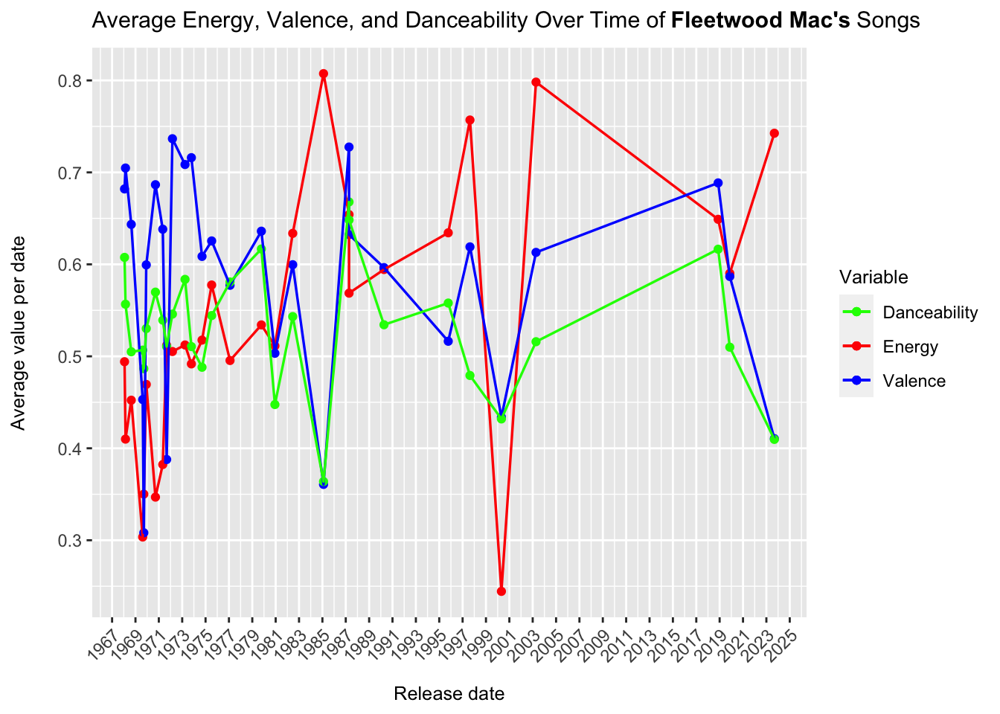
Code
DC$album_release_date <-as.Date(DC$album_release_date)# Calculate average values for each release dateaverage_data <- DC %>%group_by(album_release_date) %>%summarise(avg_energy =mean(energy),avg_valence =mean(valence),avg_danceability =mean(danceability))ggplot(average_data, aes(x = album_release_date)) +geom_point(aes(y = avg_energy, color ="Energy")) +geom_point(aes(y = avg_valence, color ="Valence")) +geom_point(aes(y = avg_danceability, color ="Danceability")) +geom_line(aes(y = avg_energy, color ="Energy"), linewidth =0.6) +geom_line(aes(y = avg_valence, color ="Valence"), linewidth =0.6) +geom_line(aes(y = avg_danceability, color ="Danceability"), linewidth =0.6) +labs(title =expression("Average Energy, Valence, and Danceability Over Time of"~bold("Doja Cat's") ~"Songs"),x ="Release date",y ="Average value per date",color ="Variable") +scale_x_date(date_breaks ="1 year", date_labels ="%Y") +scale_y_continuous(breaks =seq(0, 1, by =0.1)) +scale_color_manual(values =c("Energy"="red", "Valence"="blue", "Danceability"="green")) +theme(title =element_text(size =9.5), axis.text.x =element_text(angle =45, hjust =1),axis.title.y =element_text(margin =margin(r =15)), axis.title.x =element_text(margin =margin(t =10)), )
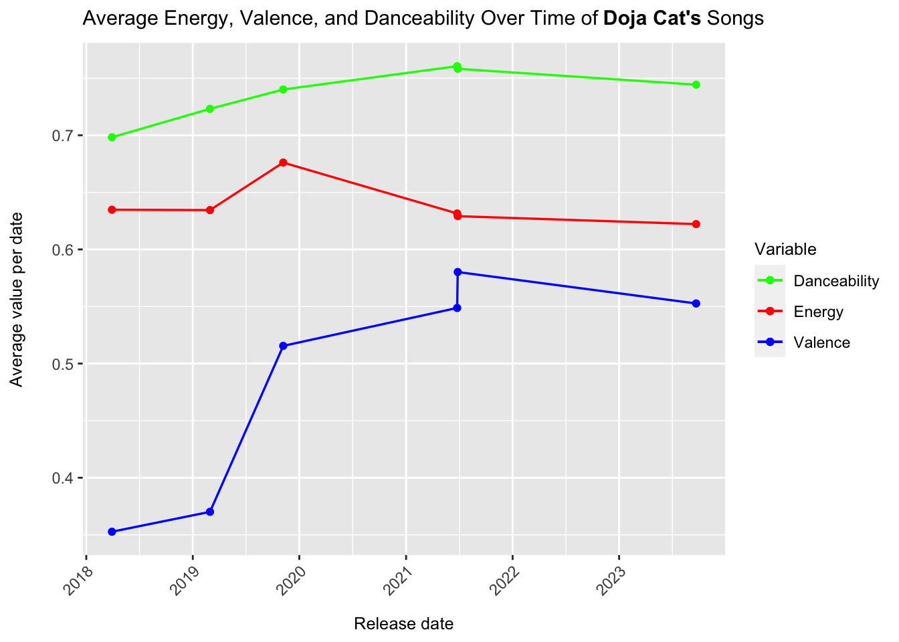
Code
PP$album_release_date <-as.Date(PP$album_release_date)# Some NAs are introduced when as.Date is called. This is because only the year of their release is listed. We will omit them because we cannot work with them. PP <-na.omit(PP)# Calculate average values for each release dateaverage_data <- PP %>%group_by(album_release_date) %>%summarise(avg_energy =mean(energy),avg_valence =mean(valence),avg_danceability =mean(danceability))ggplot(average_data, aes(x = album_release_date)) +geom_point(aes(y = avg_energy, color ="Energy")) +geom_point(aes(y = avg_valence, color ="Valence")) +geom_point(aes(y = avg_danceability, color ="Danceability")) +geom_line(aes(y = avg_energy, color ="Energy"), linewidth =0.6) +geom_line(aes(y = avg_valence, color ="Valence"), linewidth =0.6) +geom_line(aes(y = avg_danceability, color ="Danceability"), linewidth =0.6) +labs(title =expression("Average Energy, Valence, and Danceability Over Time of"~bold("Peso Pluma's") ~"Songs"),x ="Release date",y ="Average value per date",color ="Variable") +scale_x_date(date_breaks ="1 year", date_labels ="%Y") +scale_y_continuous(breaks =seq(0, 1, by =0.1)) +scale_color_manual(values =c("Energy"="red", "Valence"="blue", "Danceability"="green")) +theme(title =element_text(size =9.5), axis.text.x =element_text(angle =45, hjust =1),axis.title.y =element_text(margin =margin(r =15)), axis.title.x =element_text(margin =margin(t =10)), )
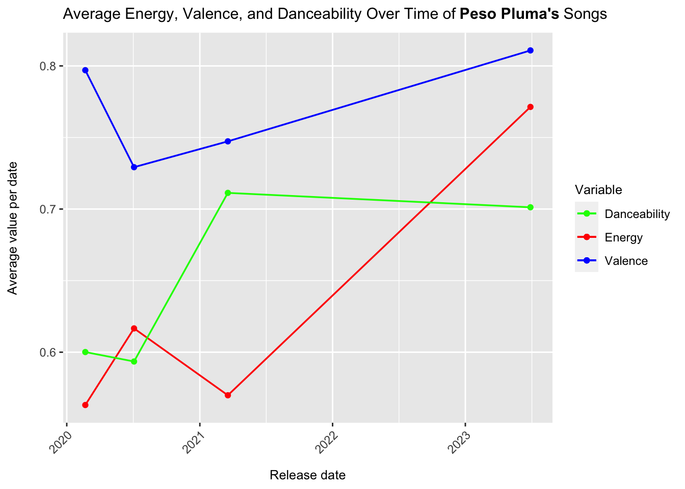
4 Citations:
(paper and image) Helmholz, P., Meyer, M., & Robra-Bissantz, S. (2019, June 12). Feel the Moosic: Emotion-based Music Selection and Recommendation. https://doi.org/10.18690/978-961-286-280-0.11